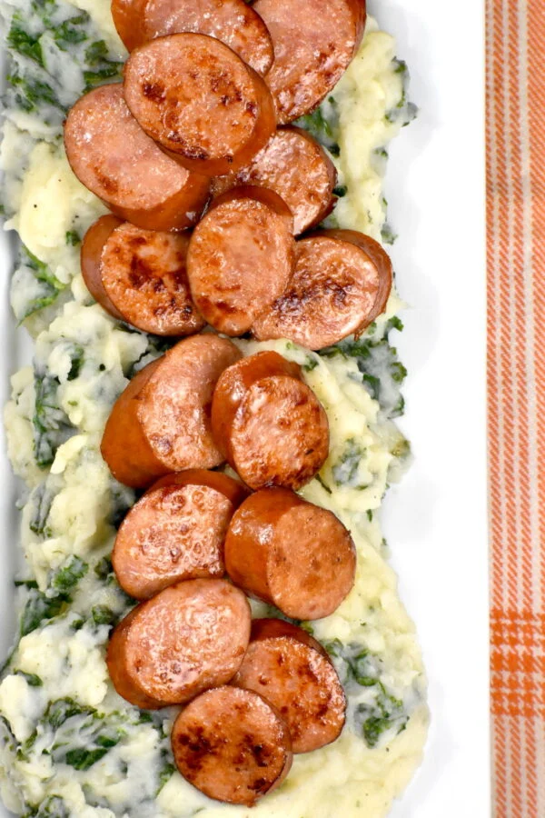

Stamppot

Description
Now here's a twist on your mashed potatoes! This national
dish of the Netherlands is a comfort food that I am glad to
have in my life
It is a simple and humble dish, where potatoes are mashed
with other veggies and topped with smoked sausage. But
somehow this flavor combination works perfectly.
Ingredients
- Potatoes
- Sausage
- Kale
- Shallots
- Milk
- Salt
Steps
-
Cut the potatoes into one inch cubes and add them to a
large pot.
-
Bring them to a boil and cook for about 20 minutes or until
the potatoes are soft, then drain them.
-
Heat a little butter or oil in a skillet over medium heat.
Add the chopped shallots and garlic and cook for a minute or
two.
-
Add water and steam until the kale is soft and mast the
potatoes along with butter, milk and salt.
-
Cook the sausage according to your preferred method and
serve!